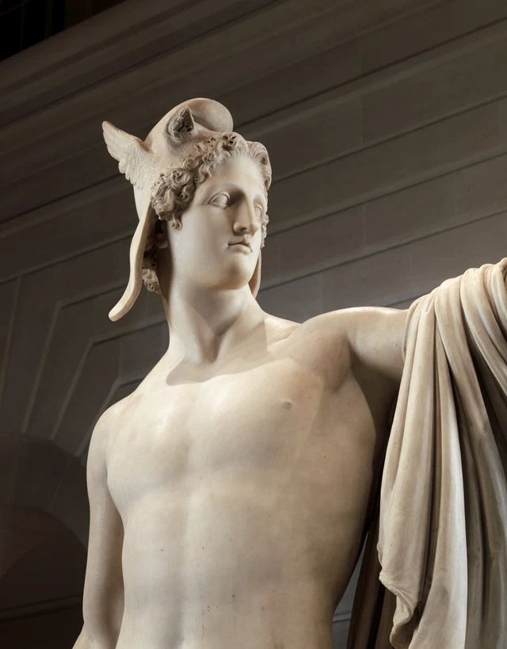
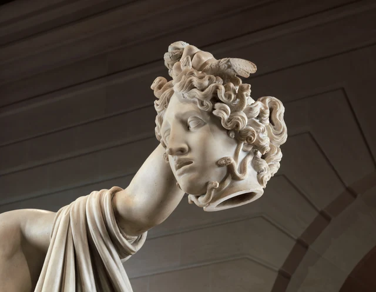
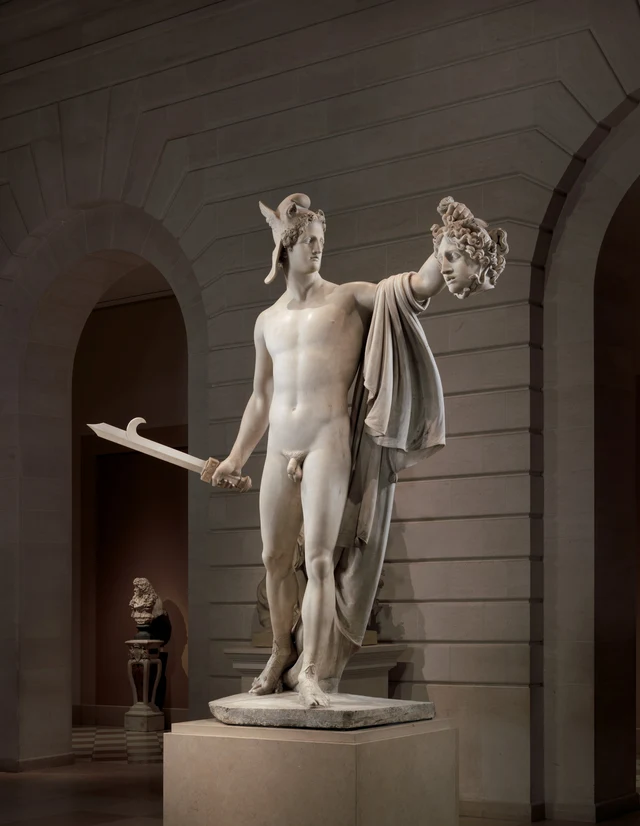

Regardons d’abord la hauteur des deux mains.
L’une tient une épée, près de la taille ; l’autre s’élève et serre une touffe de cheveux bouclés. Sous ces cheveux pend un visage. Persée tourne la tête vers lui, mais son corps se déploie face à nous. L’épée et la tête se répartissent de part et d’autre du corps, séparées par la grande étendue calme et lisse de la poitrine et du ventre.
Il a cessé de frapper. Il fait encore autre chose : il lève le résultat pour le donner à voir.

Canova organise une histoire d’une extrême violence en des formes que l’on peut regarder à loisir. La mise à mort n’a pas disparu de l’œuvre : la tête séparée du corps est devant nous. Mais la précipitation du combat s’est retirée, laissant un bras étendu, un visage posé et l’emplacement de ce qui est montré. C’est cette transformation qui mérite surtout d’être interrogée : comment passons-nous d’un beau corps entier à l’autre visage qu’il tient dans sa main ?
L’œuvre appartient au néoclassicisme du début du XIXe siècle. Canova étudie les sculptures grecques et romaines et reprend les sujets antiques à travers des proportions corporelles épurées, des contours nets et des expressions retenues. « Classique » ne signifie pas ici recopier un objet ancien : il s’agit de donner à une composition nouvelle la gravité et la force de conviction de la sculpture antique. Présentation de Canova par le V&A
Nous regardons la version réalisée pour le comte et la comtesse Tarnowski, aujourd’hui conservée à New York. Elle est postérieure à celle du Vatican, et les deux ne sont pas identiques en tous points. Identifions d’abord cet exemplaire, puis regardons comment il place la victoire devant nous. Étude du Metropolitan Museum
1. L’épée est toujours là, le coup est déjà passé
La main droite tient assez bas la poignée de l’épée, dont la lame part en diagonale vers l’extérieur. Un crochet bien visible à son extrémité la distingue d’une simple tige droite. Mais la main n’est pas levée au-dessus de l’épaule, et le corps ne se tord pas violemment dans le sillage de la lame. L’épée peut nous dire ce qui a eu lieu ; elle n’entraîne pas le corps vers un nouveau coup.
De l’autre côté, c’est l’inverse. Le haut du bras gauche se déploie presque horizontalement, l’avant-bras se relève et la main se ferme au-dessus de la tête. La lame s’éloigne du corps, la tête aussi : l’une basse, l’autre haute, elles ouvrent le torse de part et d’autre. Entre elles, aucun adversaire en plein affrontement ; seulement un corps qui s’offre au regard du spectateur.
Dans les récits courants du mythe, Persée reçoit la mission de rapporter la tête de Méduse. Aidé par les dieux, il utilise le reflet dans son bouclier pour éviter le regard qui pétrifie et la décapite pendant son sommeil. C’est une attaque rendue possible par des instruments particuliers et par le choix du moment. La statue ne rejoue pas ces étapes : ni corps endormi, ni tranchant allant vers un cou, ni bouclier dans lequel le héros pourrait regarder un reflet. Met : Méduse dans l’art grec antique
La « victoire » constitue donc une interprétation traditionnelle fondée. Le trophée est déjà dans la main, l’arme a quitté la position d’attaque, et le personnage n’est plus en train d’esquiver. Le conservateur Peter Bell souligne que le geste est ici celui de la présentation, non de la mise à mort ; il suggère aussi que l’œuvre pourrait évoquer le moment où le héros offre la tête à Athéna. Commentaire du musée
À qui l’offre-t-il ? La photographie ne le dit pas. Ce que nous pouvons d’abord constater, c’est que la main gauche a porté la tête loin du flanc, à un endroit où d’autres peuvent la voir. Le geste transforme une mission dangereuse accomplie à l’écart en un résultat publiquement visible. En venant devant la statue, nous nous plaçons aussi à la réception de cette présentation.
2. Le corps s’ouvre vers nous, le visage se tourne ailleurs
Cette sculpture dépasse deux mètres quarante de haut. Dans la figure 1, le personnage remplit presque l’arche architecturale ; épaules et bras déploient la largeur du haut du corps. Une fois les dimensions réelles connues, la tête levée n’est plus un petit accessoire sur un écran : elle pend dans la main d’un personnage imposant, à une hauteur considérable du sol.
Les deux jambes ne répartissent pas non plus également les directions de l’image. La jambe gauche du héros, plus droite, se trouve à droite de la figure 1 ; la droite part en oblique de l’autre côté, talon relevé. Le haut du corps ne bascule pas avec la jambe inclinée ; taille et ventre changent de direction entre les jambes, puis les épaules se déploient plus largement. En remontant depuis les pieds, nous suivons plusieurs légers changements d’orientation qui finissent par envoyer le regard vers le bras gauche étendu.
La main qui tient la tête semble ainsi porter son poids sans effort. Le corps entier est grand, mais le mouvement ne se traduit ni par des dents serrées ni par des épaules crispées. La poignée de l’épée et les cheveux sont fermement saisis, tandis que poitrine et ventre conservent de larges surfaces continues. La force est distribuée dans l’organisation de la pose, plutôt que concentrée dans une explosion du visage.

De près, les lèvres restent closes, sans rides profondément contractées entre les sourcils. Les fines pièces latérales du casque descendent, tandis que les boucles forment de petits reliefs serrés aux coins du front. Le lisse des joues et du cou en ressort davantage. Nous pouvons y lire de l’assurance ou éprouver une distance ; quel que soit le mot choisi, la sculpture ne nous presse pas par une expression violente.
La rotation de la tête importe particulièrement. La poitrine fait face au spectateur, mais le visage se tourne du côté de la tête tenue à bout de bras. Nous pouvons regarder son corps entier, sans que cette ouverture se laisse facilement prendre pour un échange direct avec nous. L’orientation de son attention nous éloigne de son visage et nous conduit le long de l’épaule, du bras et de la main, à la recherche d’un autre visage.
L’Apollon du Belvédère antique est une référence importante de cette composition. Étude du Metropolitan Museum Même sans connaître cette sculpture, on peut voir comment la gravité se construit ici : le torse reste ouvert, les membres se laissent de l’espace et la rotation de la tête donne une direction à cette ouverture. Le corps idéal n’est pas seulement un ensemble de belles proportions : il guide le regard.
3. Méduse a, elle aussi, un visage calme que l’on peut contempler
En suivant le bras gauche, nous remarquons peut-être d’abord les serpents. Ils sortent des boucles, s’enroulent aux tempes et près de la mâchoire ; leurs petites écailles se distinguent des mèches plus larges. Mais au centre de leur cercle, nous ne trouvons pas une face bestiale aux crocs découverts.

L’arête du nez est fine et longue, les joues régulières, la bouche n’est ouverte que d’une étroite fente. Les bords des paupières sont nets ; blessures et traces de sang ne couvrent pas la surface du visage. Sa ressemblance avec Persée tient d’abord au même soin apporté à la structure du visage : la complexité des boucles encadre le lisse de la peau, et tous deux nous permettent de nous arrêter pour regarder de près.
La différence tient à la manière dont ce visage reste en l’air. La tête de Persée se prolonge par le cou jusqu’aux épaules ; celle de Méduse est tenue par une main au-dessus d’elle. L’une repose sur un corps, l’autre pend par les cheveux. Même en laissant momentanément l’épée de côté, la façon dont les têtes sont soutenues dit clairement leur rapport de positions.
L’ouverture ovale sous le cou rend cette différence plus concrète. Elle n’est pas traitée comme une plaie de chairs retournées ; pourtant, vue d’en bas, elle découvre nettement son intérieur sombre. Le visage peut avoir la délicatesse d’une peau : la tête reste soulevée comme une chose séparée d’un corps. Le calme ne supprime pas la rupture ; il déplace notre attention du sang jaillissant vers le fait de lever, de suspendre et de montrer.
Inutile aussi de compléter l’histoire en supposant qu’« un monstre doit forcément être laid ». Dans l’art grec antique, Méduse a plusieurs visages, et de belles représentations apparaissent dès l’époque classique ; sa tête a également servi longtemps d’image protectrice et apotropaïque. Étude du Met sur Méduse Le savoir rend le choix de Canova plus lisible : les serpents et la tête coupée signalent toujours son identité dangereuse, mais le visage conserve des formes offertes à l’admiration.
Revenons aussi aux règles du mythe. Après sa mort, la tête de Méduse peut encore pétrifier ; le fait que Persée se tourne maintenant vers elle ne permet donc pas d’affirmer que la décapitation a entièrement supprimé le danger. Mythe et histoire des images Orienter son visage vers cette tête constitue une puissante relation de composition ; la sculpture ne fournit pas en même temps un épisode expliquant comment le pouvoir surnaturel aurait cessé d’agir.
Notre position devant ce visage est donc singulière. Le récit nous dit de ne pas le regarder ; l’œuvre déploie pourtant un immense travail pour qu’il mérite d’être regardé. Méduse est levée comme un trophée et retient aussi notre attention par ses propres formes. Elle ne retrouve pas son corps, mais ne se réduit pas davantage à un petit signe servant seulement à prouver la victoire.
4. La draperie relie les deux visages au sol
Passons à la figure 4. Laissons d’abord les têtes et regardons l’étoffe sur le bras gauche.

Près du haut du bras, le tissu se rassemble en plis étroits et serrés, puis s’élargit progressivement vers le bas. Son bord extérieur forme une courbe à hauteur de la taille, mais les plis profonds intérieurs continuent de conduire le regard derrière les jambes. Plus bas, de longs plis s’inclinent vers le pied de l’autre côté, avant de s’arrêter sur la base.
À ne regarder que le nu, poitrine, ventre et jambes composent un corps humain assez clairement délimité. La draperie ajoute à côté du corps un parcours indépendant. En haut, elle s’approche de la main levée ; au milieu, elle reste séparée du ventre ; en bas, elle revient vers les pieds. Nous pouvons passer de la tête au bras, puis aux plis, et descendre jusqu’au sol sans longer le torse nu.
Ce parcours règle aussi l’alternance du dense et de l’ouvert dans l’œuvre. Sous le bras gauche, il n’y a pas un vide continu : la draperie donne de l’épaisseur à cet endroit. Autour de l’avant-bras et de la tête, l’espace reste ouvert, de sorte que le visage suspendu ne se confond pas avec le thorax. À droite du personnage, l’épée s’étend seule, mince, rigide et droite, contrastant avec les plis serrés de son côté gauche.
Les superpositions diffèrent entre les figures 1 et 4. Dans la figure 1, le bras gauche se déploie plus largement à l’horizontale et le visage de Méduse est presque frontal ; dans la figure 4, l’avant-bras pointe plus nettement vers nous et la tête se présente de côté. L’objet soulevé acquiert ainsi une épaisseur : il occupe un espace en avant du corps du héros, plutôt que d’être un motif plaqué à son flanc.
Les ombres portées nous rappellent aussi que les plis de marbre ne sont pas des lignes dessinées à la surface. L’intérieur des plis profonds s’assombrit, leurs bords prennent la lumière, et les ondulations du tissu avancent et reculent réellement dans l’espace. Les surfaces courbes continues du nu, les creux de la draperie et les petits détours des serpents organisent, dans une même pierre, trois rythmes de regard différents. Le calme n’est pas la pauvreté des surfaces ; il permet de voir ces différences l’une après l’autre.
5. La victoire a besoin d’un spectateur
Revenons maintenant aux deux mains du début.
L’épée est basse, la tête haute. Au premier regard, elles nous aident peut-être seulement à identifier le mythe. Après les deux visages et la draperie, le geste de lever la tête n’est plus une simple pose à la fin du récit : il décide de ce qui est le plus visible, de qui apparaît comme une personne entière et de qui apparaît comme un objet que l’on peut soulever.
C’est aussi ce qui laisse un trouble au sein de la gravité de l’œuvre. Le héros reçoit un corps entier et serein ; Méduse n’a plus qu’une tête tenue dans une main. Tous deux sont sculptés avec délicatesse, sans pour autant occuper des positions égales. La douceur des visages et la netteté de la section rendent la violence moins criante, tout en maintenant son résultat à un endroit bien visible.
L’interprétation traditionnelle de la victoire héroïque est donc un point de départ utile. Elle nous aide à comprendre comment l’épée, le casque, la tête coupée et le geste de présentation appartiennent à un même récit. En continuant de regarder, l’œuvre nous fait aussi percevoir ceci : si la victoire peut être admirée si calmement, c’est que le combat a été déplacé hors de l’image et que le trophée a été disposé à un endroit assez clair et assez beau.
Canova ne nous fait pas assister au coup d’épée. Il nous place devant l’instant qui suit le soulèvement de la tête : nous pouvons admirer l’art de transformer la pierre en peau, en boucles et en plis, tout en devant voir la main serrée dans les cheveux. La beauté prolonge le regard ; ce regard prolongé nous laisse précisément le temps de reconnaître de quoi ce calme est fait.
Lecture facultative : regarder à nouveau avec SAE
Trouver beau le visage sculpté de Méduse revient-il à approuver sa décapitation ?
Commençons par une question plus petite. Revenons à la figure 3 et distinguons deux sortes de choses qui nous arrêtent. Il peut y avoir, d’un côté, la différence entre les boucles et les écailles, le bord fin des lèvres, le passage de la joue à la mâchoire ; de l’autre, la main serrée au sommet du crâne ou le cou sans corps. Les premières attirent l’attention sur la façon dont la sculpture prend forme ; les secondes nous font prendre conscience de ce qui arrive à la figure représentée. Dans une même photographie, ces deux attentions n’ont pas à s’annuler.
Revenons ensuite à la figure 1 : notre jugement a-t-il changé ? La beauté délicate du gros plan appartient désormais, dans l’œuvre entière, au geste d’une personne qui en montre une autre. Vous pouvez admirer les relations entre les formes tout en les trouvant troublantes ; vous pouvez aussi penser que l’œuvre mérite d’être regardée plus longtemps précisément parce qu’elle garde ce trouble dans une forme aussi nette.
Il ne s’agit pas simplement de remplacer le verdict « joli » par « laid ». La question est de savoir à quoi répondent respectivement, dans un même regard, le jugement de forme, le plaisir et le jugement sur l’acte. Si nous les exprimons tous par un seul « j’aime », nous risquons de perdre les différences que nous avons effectivement vues.
La présentation générale de l’esthétique SAE (Self-as-an-End) distingue explicitement la beauté du plaisir, ainsi que des jugements portant sur ce qui est correct ou utile. C’est un point d’entrée possible ici : reconnaître la réussite d’une relation sculpturale ne nous oblige pas à approuver chaque acte qu’elle représente. Cette distinction aide à poursuivre le regard, plutôt qu’à prononcer au moyen d’un terme théorique un verdict définitif sur le héros ou le spectateur. Présentation générale de l’esthétique SAE
Images et sources
Les quatre photographies proviennent de la même notice du Metropolitan Museum of Art : deux vues d’ensemble de trois quarts face, un détail de la tête et du buste de Persée, et un détail de la tête de Méduse. Leur plus grand côté mesure 4 000 pixels. Les fichiers téléchargés depuis la source officielle sont conservés tels quels, sans correction des couleurs, recompression, retouche peinte ni génération. L’éclairage, l’architecture en arrière-plan et le cadrage influencent l’apparition des formes ; ces photographies ne sont pas présentées comme une observation complète autour de l’œuvre.
L’article porte uniquement sur l’objet 67.110.1 ; aucun détail n’a été remplacé par celui de la version du Vatican ou d’œuvres d’autres sculpteurs sur le même sujet. Les informations sur l’objet, le mythe et les interprétations historiques sont accompagnées de leurs sources ; l’ordre du regard et la lecture proposée sont ceux de cet article. Les sources complètes, dimensions, licences et sommes de contrôle des images figurent dans le registre des images ; les études utilisées sont réunies dans les références.